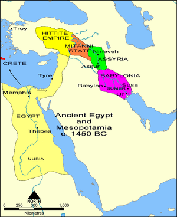
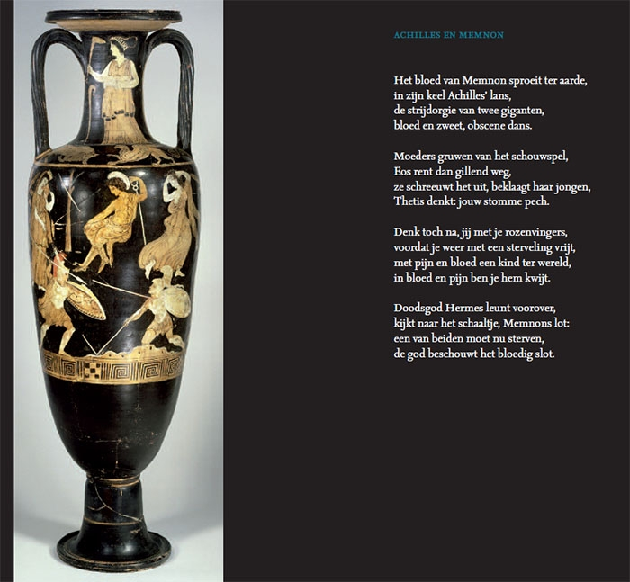

Waar komt poëzie vandaan?
Lang geleden, toen mensen nog rond het kampvuur zaten en sterren aan de hemel bekeken, begon het verlangen om gevoelens en verhalen te delen. Dat was het prille begin van poëzie. Mensen begonnen ritmische klanken en betekenisvolle woorden te gebruiken om hun avonturen, liefdes en dromen te uiten. Zo ontstond een magische dans van taal, die door de tijd heen evolueerde. Van oude Griekse helden tot liefdesverklaringen onder de maan, poëzie heeft haar roots in de menselijke behoefte om te delen en te verbinden, een tijdloos avontuur van woorden en emoties.
Het vastleggen van gedichten gaat terug tot de vroegste menselijke beschavingen. De oudste bekende gedichten zijn afkomstig uit Sumerië, een oude beschaving in het zuiden van Mesopotamië (het huidige Irak). De Sumeriërs ontwikkelden in het derde millennium voor Christus het eerste bekende schriftsysteem, het spijkerschrift, en gebruikten kleitabletten om teksten vast te leggen.
Een van de oudste bekende gedichten is het "Epos van Gilgamesh," geschreven op kleitabletten in het Akkadisch, de lingua franca van het oude Mesopotamië. Het epos vertelt het verhaal van Gilgamesh, de koning van Uruk, en omvat thema's als vriendschap, sterfelijkheid en de zoektocht naar onsterfelijkheid. Het is een opmerkelijk werk dat inzicht geeft in de denkwijze van de Sumeriërs en wordt beschouwd als een van de oudste literaire teksten ter wereld.
Klassieke dichters
Er zijn een aantal klassieke dichters:
- - Homerus
- - Vergilius
- - Ovidius